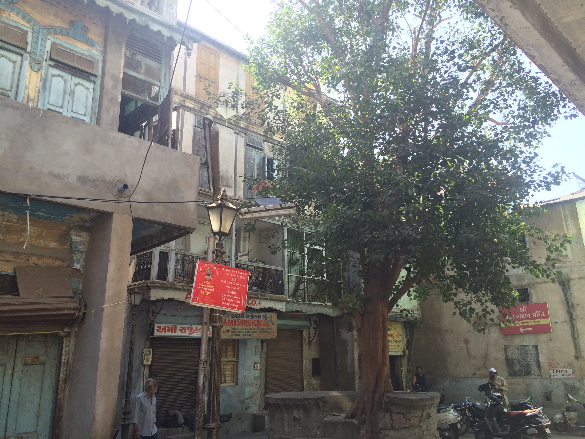
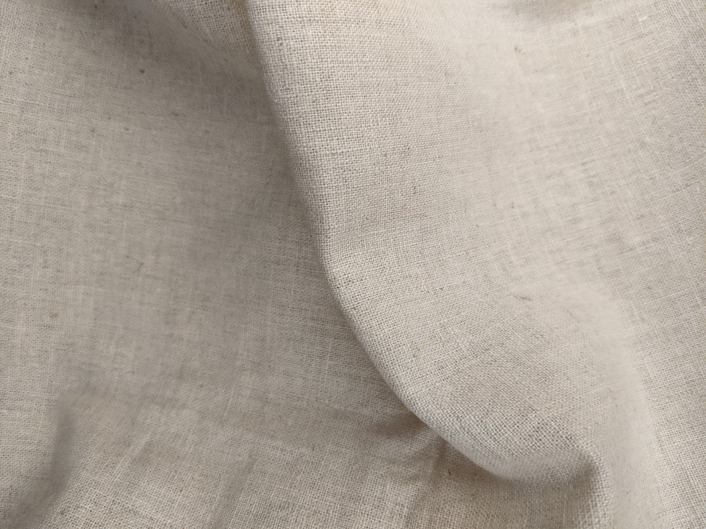

← Computational Craft | Salil Parekh
Week 6 | Midterm Proposal
Create a textile which feels alive and reacts to touch. On touching the piece, its responds to your touch by lighting up the LEDs embedded within it, or by emitting sound or using shape memory alloy wires to change the shape of the textile itself.

The interactions will be software heavy, and dependent on detecting different kinds of gestures? Maybe using an ML inference board would help?
My favourite type of textile as of now is muslin. Muslin was probably the first textile I've interacted with from the standpoint of actually intending to use it as a material. I've never actually 'seen' textile as a material prior to using muslin. I went to the cloth markets of Ahmedabad where I first interacted with the material and I absolutely loved it. The whole shop had stacks and stacks of muslin, top to bottom. Nothing to see but the off white colour of muslin.
 I can't find an image of the market I went to, so here's a pretty courtyard from Ahmedabad. The architectural detail is incredible.
 Muslin cloth
Muslin for me is a fairly humble material, but it feels comforting and warm to hold on to. The texture of the material is wonderful to touch, with just the right amount of roughness. I wonder how muslin feels about being touched and held on to–does it like it? Or does it want to be left alone?
I want to explore this by giving muslin the ability to respond to touch–either through LEDs, SMA alloys or thermocromatic colours even?
Muslin feels very analogue, and I'd like to hand sew all the components. It just feels right to do so with muslin. I do plan to use laser etching to precisely place all the markers onto the cloth in order to sew it accurately.
Here's a more detailed plan of the piece:
 The textile will be comprised of a sandwich of multiple layers
The textile will be comprised of a sandwich of multiple layers
 The outer layers
The outer layers
 First layer with a grid of SMD LEDs
First layer with a grid of SMD LEDs
 Layer of wires for the force sensitive grid array
Layer of wires for the force sensitive grid array
 Velostat to detect pressure and position of pressure
Velostat to detect pressure and position of pressure
 Layer of wires for the force sensitive grid array + micro-controller and coin cell battery
Layer of wires for the force sensitive grid array + micro-controller and coin cell battery
 If I time, I can try to include a grid of nitinol or SMA wires to enable the textile to shrink itself
If I time, I can try to include a grid of nitinol or SMA wires to enable the textile to shrink itself
 Alternate variations of the layout, with the micro-controller arranged diagonally or right in the centre
Alternate variations of the layout, with the micro-controller arranged diagonally or right in the centre
List of items on the R&D Agenda:
-
[x] Which micro controller to use? RPi Pico or the Teensy LC?
Teensy all the way, thank you very much.
-
[x] Do SMD LEDs shine through muslin? Is there a diffusion (which would be ideal)
It's not great, but there is a small amount of diffusion. It needs another layer of diffusion in order to soften down.
-
[X] How many SMD LEDs can the micro controller support on a 3.3v coin cell?
It does 5 comfortably, looks good for 5-7 at the very least on the PWM pins -
[x] Coin cell or LiPo?
Coin cell isn't a bad option, as it seems to provide enough power and it's easily swappable and combining LiPo with cloth doesn't sit well with me.
-
[x] Laser etching on muslin–does it look good? Could be used to draw some generative art on the surface of the fabric
Oh yes, it looks really good. The colour of the etched parts are darker and feel warm-just what I need.
 I'm calling this LECT (Laser Etched Circuit Textile)
I'm calling this LECT (Laser Etched Circuit Textile)
- [x] Copper traces on the SMD LED layer or copper thread? Which will be easier to solder on to?
I'm leaning towards copper thread, as I want to hand sew everything. It matches the analog feel of muslin
Previous post: Week 6 | Fabricating Sensor
Next post: Week 9 | Midterm Documentation